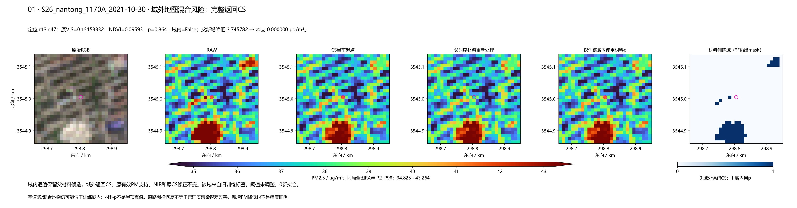
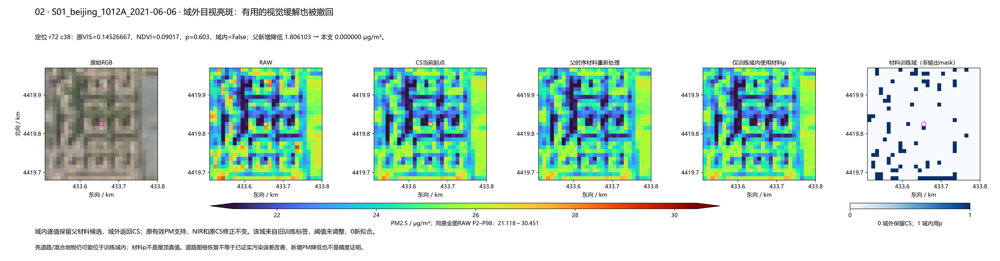
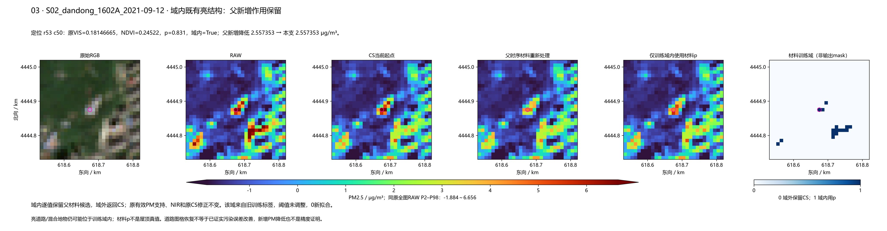
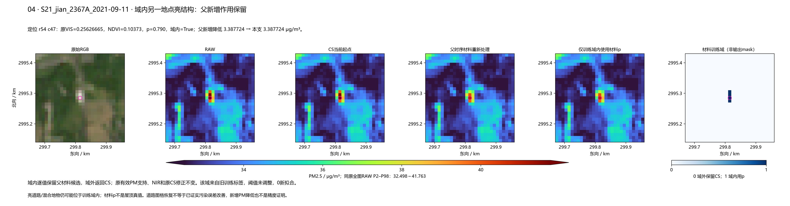
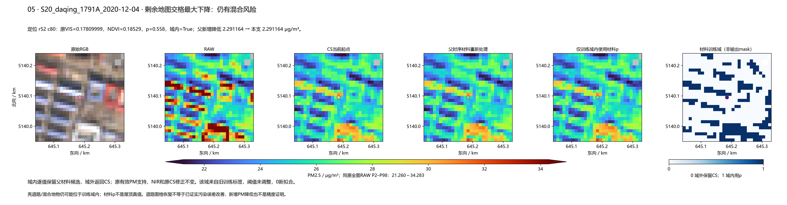
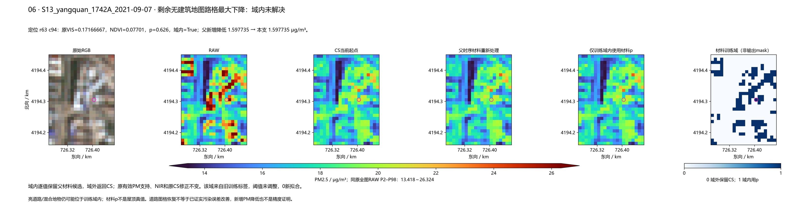

结论与局限 · 固定方案 · 方法 · 全组变化 · 道路/生产区/固定30/事件 · 已核坐标原30 · 定位数值
S26_nantong_1170A_2021-10-30，r13 c47：父新增降低3.745782 → 域限定0.000000 μg/m³；原VIS 0.15153332。

S01_beijing_1012A_2021-06-06，r72 c38：父新增降低1.806103 → 域限定0.000000 μg/m³；原VIS 0.14526667。

S02_dandong_1602A_2021-09-12，r53 c50：父新增降低2.557353 → 域限定2.557353 μg/m³；原VIS 0.18146665。

S21_jian_2367A_2021-09-11，r54 c47：父新增降低3.387724 → 域限定3.387724 μg/m³；原VIS 0.25626665。

S20_daqing_1791A_2020-12-04，r52 c80：父新增降低2.291164 → 域限定2.291164 μg/m³；原VIS 0.17809999。

S13_yangquan_1742A_2021-09-07，r63 c94：父新增降低1.597735 → 域限定1.597735 μg/m³；原VIS 0.17166667。
